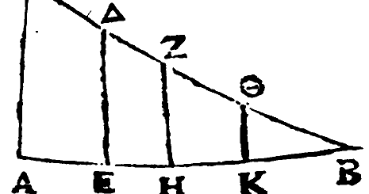
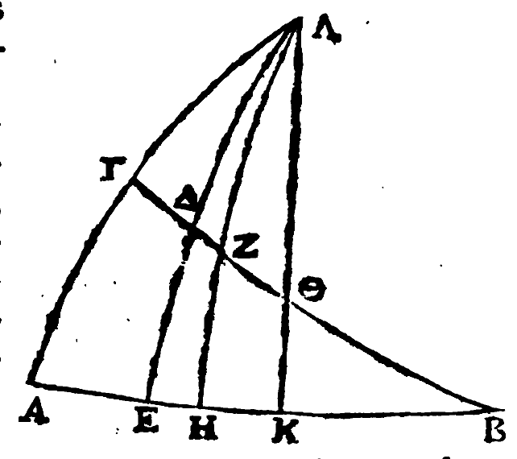

Prop. XII. (Halley 1758, pp. 99–101)¶
Menelai Alexandrini Sphaericorum Lib. III Prop. XII (Halley 1758, pp. 99–101)
Enuntiatio (Halley 1758, p. 99)
Si trianguli Sphaerici alter angulorum ad basim fuerit acutus, alter vero rectus; neque fuerit latus angulo recto subtensum majus quadrante circuli; & in hoc latere capiantur duo arcus, à quorum terminis ducantur arcus ad basim normales, atque hi arcus in latere sumpti fuerint aequales: erunt arcus, qui inter normales illos intercipiuntur, inaequales; eorumque major adjacebit angulo recto. Evenient autem in hoc casu caetera omnia quae in praecedentibus descripsimus.
Sit triangulum Sphaericum ΑΒΓ, cujus angulus Β acutus, angulus vero Α rectus; nec sit latus ΒΓ majus quadrante circuli; & in latere ΒΓ sumantur duo arcus ΓΔ, ΖΘ, per quorum terminos,




ad angulos rectos super basim ΑΒ, ducantur arcus ΔΕ, ΖΗ, ΘΚ: dico quod si arcus ΓΔ, ΖΘ fuerint aequales, arcus ΑΕ major erit arcu ΗΚ; quodque si duo arcus ΑΕ, ΓΔ simul sumpti fuerint aequales duobus ΗΚ, ΖΘ simul sumptis, erit arcus ΓΔ minor arcu ΖΘ: quod si differentia arcuum ΑΕ, ΓΔ aequalis fuerit differentiae inter arcus ΘΖ, ΚΗ, auferendo scilicet minorem ex majore, erit arcus ΓΔ major arcu ΖΘ. Universim vero ratio quam habet arcus ΑΕ ad ΗΚ major erit ratione ΓΔ ad ΖΘ.
Quoniam enim arcus ΒΓ minor est quadrante circuli, angulus autem qui ad Β acutus est, qui vero ad Α, Ε, Η, Κ sunt recti; erit (per 5am. III. hujus) ut sinus summae arcuum ΑΒ, ΒΓ ad sinum differentiae eorundem, ita sinus summae arcuum ΔΒ, ΒΕ ad sinum differentiae arcuum ΔΒ, ΒΕ; & ita sinus summae arcuum ΖΒ, ΒΗ ad sinum differentiae eorundem, ac denique ita sinus summae arcuum ΘΒ, ΒΚ ad sinum differentiae ipsorum; quae cum ita se habeant, evenient ea omnia quae in praemissis dicta sunt.
Rursus si fuerit arcus ΒΓ quadrans circuli, adeoque ΑΒ ipsi ΒΓ aequalis, eadem ipsa etiam hoc in casu consequentur, juxta ea quae demonstravimus in parte prima Libri Lemmatum Cyclicorum.
Sed & eadem alio modo ex hoc tertio Libro probabuntur. Producantur enim arcus ΑΓ, ΕΔ, ΗΖ, ΚΘ ad polum arcus ΑΒ, qui sit ad punctum Λ; & (per 3am. III. hujus) ratio sinus arcus ΑΒ ad sinum arcus ΒΕ, componetur ex ratione sinus arcus ΑΓ ad sinum arcus ΕΔ; hoc est, ex ratione sinus arcus ΒΓ ad sinum arcus ΒΔ, & ratione sinus arcus ΛΔ ad sinum arcus ΛΓ. Sed ΛΔ major est quam ΛΓ, & uterque minor quadrante circuli; quare ratio sinus ΑΒ ad sinum arcus ΒΕ major est
ratione sinus arcus ΒΓ ad sinum arcus ΒΔ. Pari modo patebit rationem sinus arcus ΕΒ ad sinum ΒΚ majorem esse ratione sinus arcus ΔΒ ad sinum arcus ΒΘ. Hinc constare potest rationem sinus arcus ΕΚ ad sinum arcus ΚΑ minorem esse ratione sinus arcus ΔΘ ad sinum arcus ΘΓ: Invertendo igitur ratio sinus arcus ΚΑ ad sinum arcus ΚΕ major est ratione sinus arcus ΘΓ ad sinum arcus ΘΔ. Et eodem modo probabitur sinum arcus ΕΚ majorem habere rationem ad sinum arcus ΚΗ quam habet sinus arcus ΔΘ ad sinum arcus ΘΖ. Pariter cum ratio sinus ΗΒ ad sinum arcus ΒΚ major sit ratione sinus arcus ΖΒ ad sinum ipsius ΒΘ, erit ratio sinus arcus ΚΑ ad sinum arcus ΑΗ minor ratione sinus arcus ΘΓ ad sinum arcus ΓΖ; ac propterea sinus arcus ΑΗ ad sinum arcus ΑΕ erit in minore ratione quam sinus arcus ΓΖ ad sinum arcus ΓΔ. Haec autem cum ita se habeant, evenient ea omnia quae in hac propositione dicta sunt, & arcus ΑΕ erit ad arcum ΗΚ in majori ratione quam arcus ΓΔ ad arcum ΖΘ. Q. E. D.
SCHOLION. In hac, uti & in praecedente propositione, citatur Liber cui titulus ספר התמונות ההקשיות hoc est, Liber Propositionum seu potius Lemmatum Cyclicorum, uti verba videntur reddenda. Curta sane sunt & imperfecta quae his demonstrandis afferuntur argumenta, & ex dicto libro petita, qui qualis fuerit ne conjectura quidem assequi licebit. Ex consensu autem utriusque Codicis MS. in ipsius Auctoris Graeco textu deperdito eadem olim reperta fuisse crediderim: qui textus an integer ad Traductores pervenerit, an potius hac in parte mancus, definire vix ausim. Sed nec te moveat si nonnulla hic desiderentur; quoniam in Corollariis ad XVam hujus libri tertii, eadem ipsa paulo evidentius demonstrata reperies.